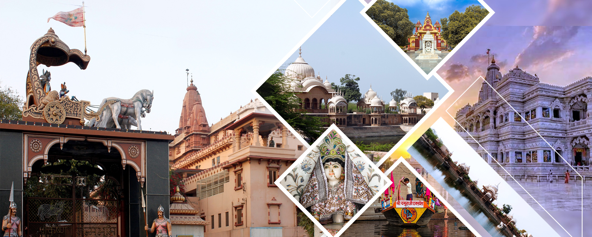
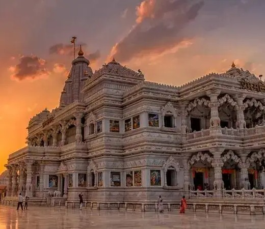
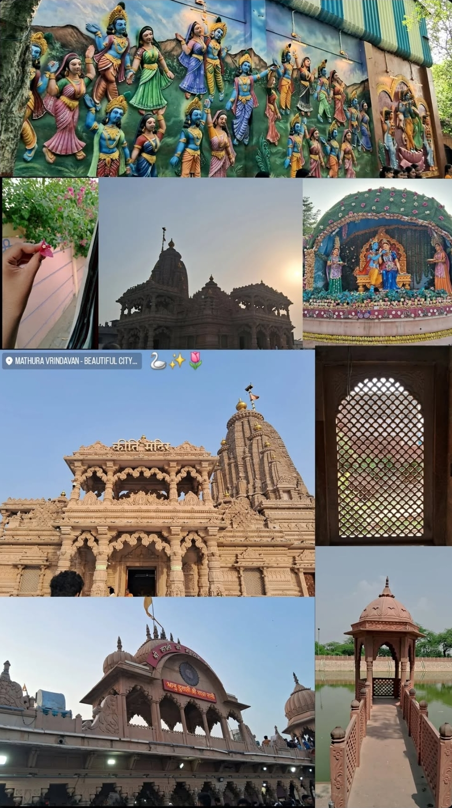
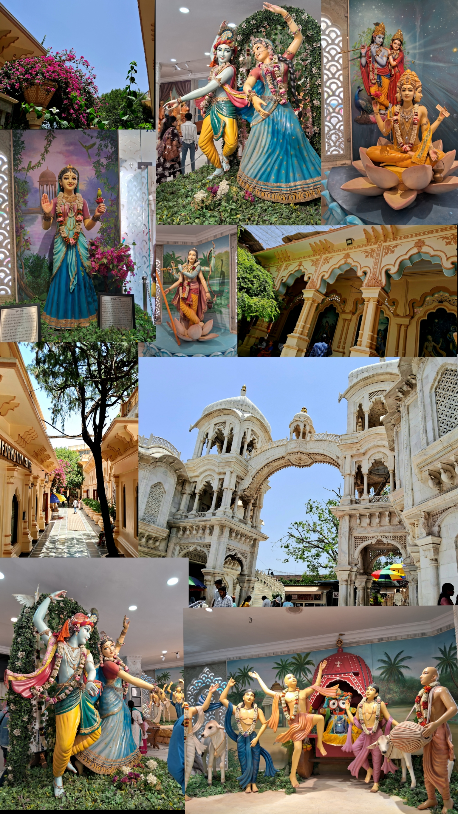
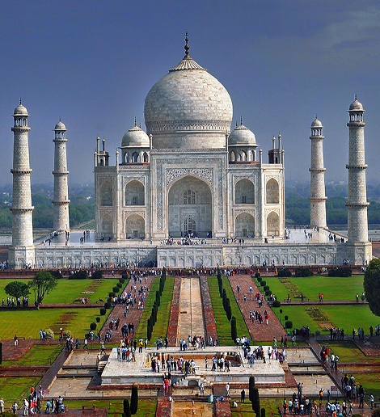

Uttar Pradesh
A Glimpse of the Entire Nation
Mathura-Vrindavan-Agra: The Heart of Devotion and History


MATHURA
One of the spiritual and sacred places of India. The birth land of Lord Krishna. It is situated in the state of Uttar Pradesh in North India and is one of the seven holy cities of India. There are a lot of temples in almost all of the streets of Mathura. Mathura at present, is situated at a distance of about 140kms from Delhi and 58kms from Agra, on the banks of Yamuna, Mathura witnesses a steady inflow of tourists.
The place attracts a large number of devotees and tourists on the daily basis. Some of the temples portray the different avatars of Lord Krishna and some shows the idols of Radha-Krishna. The most important temples in the city are: Dwarikadhish temple, Shri Raman Bihariji temple and the Gita temple. These temples are an example of the wonderful architecture and design of ancient India. Dwarikadhish temple is the temple where the festivals of Holi and Janmashtami are celebrated every year on a grand scale. On the other hand, is the Gita temple which is popular for the inscriptions that are written all over the walls. The inscriptions are taken from the holy book Bhagvat Gita and hence the name.
Lord Krishna was born in prison, where their parents Mata Devki and Vasudev were captured by his maternal uncle Kansa. Now the prison is on display for the devotees, here also Janmashtami is celebrated with great efforts and a lot of devotees from all across the world come here for the festival like Holi and Janmashtami.
The rich history of Mathura, the birthplace of Lord Krishna where he won over the evil king Kansa, symbolizes the victory of good over evil. Mathura at present is bustling town and a popular pilgrimage.
How will you explore it:
The best way to explore Mathura is by taking a walk cause in every street you can see the old-world charm and the history of Mathura through crumbling ruins of old houses, and the sweetness of people who are always willing to show you around. But you can also take local Rickshaws or can book a Rapido ride as for your comfort.

VRINDAVAN
Vrindavan is the twin city of Mathura. It is one of the main locations in Braj-Bhoomi region. It is the place where Lord Krishna spent his childhood. This sacred city is not only where Krishna’s playful flute tunes were heard but also the stage for his divine acts (Leelas).
It is situated at a distance of about only 15 kms north of Mathura and 125 kms from Delhi.
There are also a lot of temples of Radha-Krishna. The major temples are: Bankey Bihari temple, Radha Ballabh temple, Radha Raman temple, Nidhi Van temple, ISKCON of Vrindavan, Prem Mandir, Kirti Mandir, Char Dham temple. All of these have beautiful architecture, and beautiful idols of Radha-Krishna that will make you to forget all about your worries about life and your mind will come at peace.A large number of devotees come here every day to explore the city of Krishna.
How will you explore it:
Just like Mathura, to explore Vrindavan taking a walk around the streets will be the best but you have to take local vehicles or book Rapido or Uber or any taxies cause the distance between some of the temples is much greater than walking distance.
How you will reach Mathura-Vrindavan:
You can reach Mathura directly via Train, or Bus, or by your own vehicle if you are from nearby place, or you can book a flight to Delhi and then from there you can take a bus or cab to reach Mathura. And from Mathura you can take a taxi or auto rickshaw to reach Vrindavan.
More places around Mathura-Vrindavan:
There are few more important places in Braj Bhoomi like Gokul, Barsana, and Nandgaon. Gokul is the place where Lord Krishna was brought up secretly by Nand Baba and Mata Yashoda, for the first few years of his life.Barsana is the birth place of Radha Rani, there is temple too of Radha-Rani, named Ladali Ji Maharaj. While Nandgaon was the home of Nand Baba, to whom region was once gifted.
If you are interested in history or you want to know more about Radha and Krishna you should visit these places for sure. These places are about 45kms from Mathura so you can take auto rickshaw or cab to reach there.

There is one more place you should visit must if you are coming Mathura, that is Agra: The City of Taj, at the distance of about 58kms by road from Mathura, which will take only 60min approx. and you will be seeing one of the seven wonders of the world. You can take a train or bus from Mathura which will take approx. 30-40min and will be the cheapest, or you can take a cab which will take approx. 50min. There are many places to visit like: Taj Mahal, Agra Fort, Sikandra/Akbar's Tomb, Itmad-Ud-Daula, Chini Ka Rauza, Mariam's Tomb, Ram Bagh, Nagina Masjid, Mehtab Bagh, Jama Masjid, Guru Ka Taal.

AGRA: City of TAJ
Agra is the city on the banks of the Yamuna just like Mathura-Vrindavan. Agra is a city offering a discovery of the beautiful era. Agra has a rich history, reflected in its numerous monuments dotted in and around the city. The earliest citation for Agra comes from the epic Mahabharata refer Agra as "Agravana" meaning paradise in Sanskrit. The modern Agra was founded by Sikandar Lodi dynasty in 16th century. It was when Shah Jahan descended the Mughal throne that Agra reached the zenith of architectural beauty. Though the wonderful allure of the Taj Mahal attracts people from around the world over to Agra, it is not a standalone attraction. Here are your wonderful visiting places in Agra:
Taj Mahal: It was by Mughal Emperor Shah Jahan in memory of his beloved wife and Queen Mumtaz Mahal in 1631, who died giving birth to his child and whose last wish to her husband was “to build such a tomb in her memory which the world has never seen before.”
It took over 17 years, 22000 workers and 1000 elephants to build the wonderful mausoleum. This architectural masterpiece is one of the most frequented places in India by photographers and foreign tourists. The Taj Mahal looks as immaculate today as when it was first built, leaving the onlookers mesmerized.
Agra Fort: A massive red-sandstone fort located on the banks of River Yamuna was built under the commission of Emperor Akbar in 1565 and was further built by his grandson Shah Jahan. The fort, semi-circular on plan, is surrounded by a 21.4 m high fortification wall. Other places to see within the Fort are: Diwan-e-Khas - which once housed Shah Jahan's legendary Peacock throne and the diamond Koh-I-Noor, Shish Mahal - a palace with walls inlaid with tiny mirrors, and Khas Mahal - the white octagonal tower and palace.
Itmad-Ud-Daula: A masterpiece of design and construction, this tomb was built under the commission of Empress Noor Jahan in memory of her father Mirza Ghias Beg in 1623-28 A.D. This ornate tomb is considered a precursor of Taj Mahal. It is built completely in white marble and reflects a dazzling charm to the visitors. Also known as “Baby Taj”.
Guru Ka Taal:
Guru Ka Taal is a very famous Gurudwara in Agra. The construction of this place was started in the 1970's and it is said that the four out of the ten Sikh gurus are said to have paid it visit. This Gurudwara has both historical and religious importance, and attracts large number of devotees and tourists.

How to visit all the places here: You can take a taxi or auto-rickshaw for a day to reach major sites like the Taj Mahal, Agra Fort, Itmad-Ud-Daula etc. The best time of the day to visit Agra is in the early morning, right after the monuments open, for the less crowds and better light for photos. The pleasant mornings and comfortable temperature make it the ideal time for exploring the Taj and other attraction.